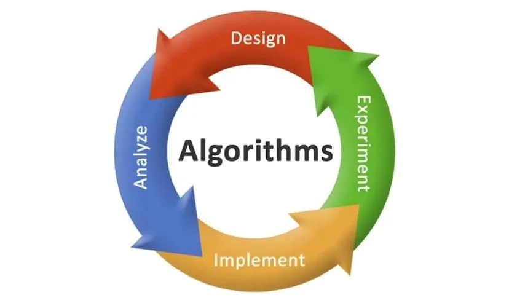

Teaching Experience
With over 8 years of academic experience, Dr. Usha Jain has taught core computer science subjects such as:

Design and Analysis of Algorithms
Information Security
Operating Systems
She employs an interactive and hands-on teaching methodology, inspiring students to excel in both academics and research.